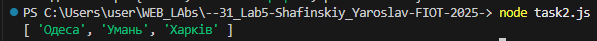

const concerts = { Київ: new Date("2020-04-01"), Умань: new Date("2025-11-28"), Вінниця: new Date("2020-04-21"), Одеса: new Date("2025-11-26"), Хмельницький: new Date("2020-04-18"), Харків: new Date("2025-12-10"), }; const now = new Date(); // Отримуємо масив майбутніх міст і сортуємо за датою const result = Object.entries(concerts) .filter(([city, date]) => date > now) // залишаємо тільки ті, що ще не відбулись .sort((a, b) => a[1] - b[1]) // сортуємо за датою .map(([city]) => city); // залишаємо тільки назви міст console.log(result);
